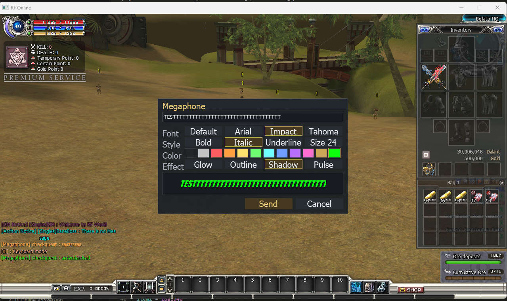
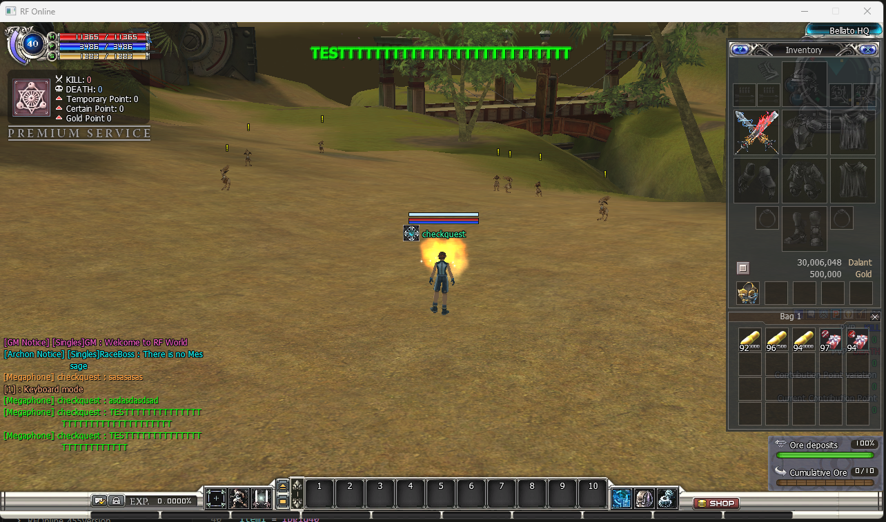

Megaphone
Megaphone (Player Announcements)
Server switch
Client-visible
Hot-reload


[Megaphone] Name : message.What it does — and why you would use it
The Megaphone turns a potion item into a player-authored announcement. Instead of the stock behaviour (the game shouting the potion's name automatically), the player right-clicks the potion and gets a composer window where they type their own message and style it:
- Font: Default, Arial, Impact or Tahoma.
- Style: Bold, Italic, Underline and Size 24 (combinable).
- Color: twelve swatches, from plain white to bright neon.
- Effect: Glow, Outline, Shadow or Pulse (combinable).
A live Preview strip shows exactly how the message will look before it is sent. On Send the server consumes one potion and broadcasts the styled message to every live player on every map and every race:
- It is projected across the top-center of the screen, above the action, always in front.
- Exactly one message is projected at a time: it is held for at least 6 seconds, then fades out. Any announcement that arrives while one is on screen waits in a FIFO standby queue and only fades in after the current message has finished — messages never jump the queue or stack on top of each other.
- The same message is mirrored into the chat log and bottom chat bar as
[Megaphone] Name : message, keeping the chosen color and the bold / italic / underline / glow / shadow styling.
Cancel (or Esc) closes the composer and the potion is not consumed — players only pay when they actually send.
Server-authoritativeThe server decides everything: which item codes are megaphones, whether the feature is on, the cooldown, and the consumption. A modified client cannot broadcast without owning the potion, and cannot bypass the cooldown.
How to activate it
-
Turn the feature on. Open .Server\Zoneserver\RF_Bin\Modules\Megaphone\Megaphone.ini in Notepad and set
Enable = 1under[General]:
Save the file. A running Zone server hot-reloads it (checked at most once every 2 seconds) — no restart needed.[General] Enable = 1 CooldownSec = 10 -
List the potion item codes. Under
[Items], setItemNumto how many codes follow, then oneItem<n> = codeline each. The code is the potion's item code from the item table (for exampleipgld40, the stock VIP megaphone potion):
Listed codes are removed from the stock automatic name-broadcast, so a megaphone potion never double-posts.[Items] ItemNum = 1 Item1 = ipgld40 - Get the potion to players. Sell it in a shop, drop it, or grant it with a GM command — whatever fits your economy. Only players holding a listed potion can compose an announcement.
- Test it. In game, right-click the potion → the composer opens → type a message, pick a style, press Send. The banner appears at the top of your screen and in chat; a second client logged in anywhere on the server sees the same. Press Enter to send and Esc to cancel from the keyboard.
Both the switch and the item list matterWith
Enable = 0 the potion behaves like a normal potion. With Enable = 1 but an empty / wrong item list, right-clicking simply runs the potion's normal effect. Set the switch and list the exact item codes you want to act as megaphones.The config file
One file, Modules\Megaphone\Megaphone.ini, beside the other module files in the Zone server's Modules folder:
| Key | Section | Meaning |
|---|---|---|
Enable | [General] | 0 = off (listed potions behave normally), 1 = on (listed potions open the composer). |
CooldownSec | [General] | Seconds each player must wait between accepted sends. A send during cooldown is rejected and the potion is not consumed. 0 = no cooldown. |
ItemNum | [Items] | How many Item<n> lines follow, counted from Item1 with no gaps. |
Item1, Item2, … | [Items] | Potion item codes that act as megaphones (the same codes used by Potion Lua Overrides). |
Rules & limits
- One potion per send. Sending consumes exactly one item from the stack; cancelling consumes nothing.
- Cooldown rejects are free. A send refused by
CooldownSecleaves the stack untouched. - Message length. Up to 127 characters; control characters are stripped and an empty message is refused (without consuming).
- Screen discipline. One banner on screen at a time, held at least 6 seconds plus a short fade; everything else waits in a strict FIFO standby queue (capped at 32) and projects in send order.
- Everyone, everywhere. The broadcast reaches every live player on the server — all maps and all races — and each of them also gets the chat-log mirror.
- Chat mirror styling. The chat line keeps the chosen color and bold / italic / underline / glow / shadow. Size 24 and Pulse are banner-only (chat rows have a fixed height and chat history is static).
- No double posts. Item codes listed here are excluded from the stock effect-170 automatic broadcast, so enabling the module never produces two messages for one potion.